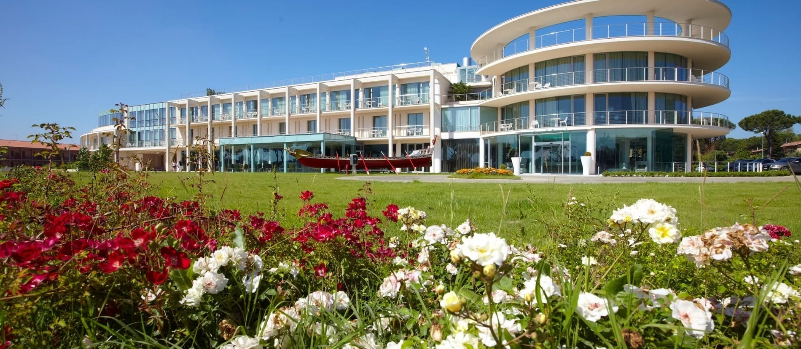

Ordine dei Periti Industriali
della provincia di Pisa
Essere Perito Industriale, oggi.
80 anni di storia per interpretare il cambiamento del ruolo della professione sull’onda della trasformazione tecnologica, economica e sociale.
Smy Pisa Plaza
La sede scelta è in Via Caduti del lavoro, 46 a Pisa, in una struttura congressuale facilmente riconoscibile anche come ex Tower Plaza.

Sede dell’evento
Smy Pisa Plaza, struttura congressuale in Via Caduti del lavoro, 46.